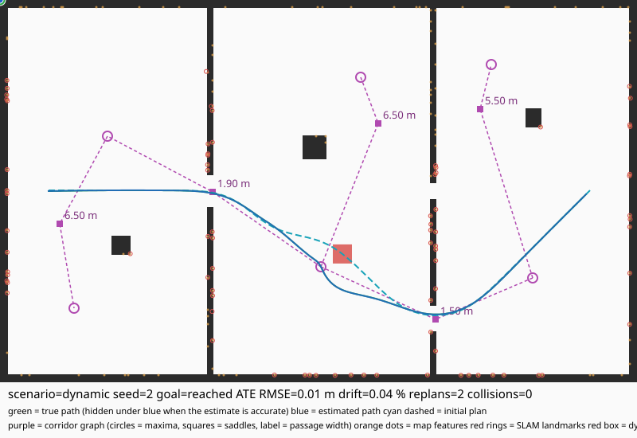

LUNA
A CPU-only, no-CUDA SLAM and navigation stack that runs inside 8 GB of RAM on 4 CPU cores — no ROS, no GPU.

One process, simulator to steering
The full pipeline is built and tested end to end. luna navigate runs every stage in a single process and scores the drive against the real world — not the map it built.
The load-bearing part
The simulator is the ground-truth generator that makes the rest testable without hardware. A seeded RNG drives world generation, noise, and fault injection, so a run is reproducible bit for bit — which is what lets the benchmark report be regenerated and compared.
| World | What it stresses |
|---|---|
| rooms | Baseline indoor topology; well-textured |
| corridor_loop | Narrow passages and turning; revisit for loop closure |
| saddle_hall | Deliberate saddle points, to exercise the Morse layer |
| maze | Narrow corridors; coverage-limited over short runs |
| cluttered | Dynamic-obstacle handling |
| textureless | No visual features; forces reliance on geometry |
Every number regenerated, none hand-written
Generated by make bench from real runs of the built binary. Seeds 1–8, 30 s of simulated time per run.
| World | Runs | Collision-free | Collisions | Path (m) | Real-time factor |
|---|---|---|---|---|---|
| rooms | 8 | 6 | 2 | 21.8 | 8.5× |
| corridor_loop | 8 | 7 | 1 | 24.1 | 7.3× |
| saddle_hall | 8 | 7 | 1 | 21.9 | 7.4× |
| maze | 8 | 7 | 1 | 18.9 | 10.6× |
| cluttered | 8 | 7 | 1 | 23.6 | 6.7× |
| textureless | 8 | 7 | 1 | 23.6 | 11.1× |
| World | Features / frame | Tracked % | Track err (px) | Stereo depths / frame | ms / frame |
|---|---|---|---|---|---|
| rooms | 295.6 | 90.5 | 1.9097 | 83.5 | 52.35 |
| corridor_loop | 345.9 | 93.9 | 1.7855 | 96.3 | 61.61 |
| saddle_hall | 359.7 | 93.7 | 1.8382 | 110.2 | 62.76 |
| maze | 192.7 | 89.7 | 1.9139 | 48.8 | 37.40 |
| cluttered | 363.3 | 96.8 | 1.7275 | 108.2 | 66.15 |
| textureless | 0.1 | 100.0 | 1.8915 | 0.0 | 10.41 |
| World | Plan status | Plan (m) | Driven (m) | Tracking RMS (m) | Collisions |
|---|---|---|---|---|---|
| rooms | no_corridor_route | 0.0 | 0.0 | 0.000 | 0 |
| corridor_loop | blocked | 17.3 | 0.0 | 0.000 | 0 |
| saddle_hall | ok | 14.4 | 14.1 | 0.208 | 0 |
| maze | blocked | 3.3 | 0.0 | 0.000 | 0 |
| cluttered | ok | 23.2 | 22.9 | 0.185 | 0 |
| textureless | invalid | 0.0 | 0.0 | 0.000 | 0 |
| Estimate | ATE (m) | ATE (% dist) |
|---|---|---|
| dead reckoning | 0.165 | 0.094 % |
| pose graph | 0.224 | 0.127 % |
| Metric | Value | Target |
|---|---|---|
| peak RSS | 19 MB | < 5 GB |
| sim duration | 30 s | — |
Three commands
# configure + build (Release)
make
# run the CTest suite (7 suites)
make test
# regenerate docs/benchmark_report.md from real runs
make bench# render a generated world as ASCII
./build/luna world --type maze --seed 7
# run SLAM + pose graph + loop closure, score against ground truth
./build/luna estimate --type rooms --seed 6 --duration 300
# run the full autonomy loop: SLAM -> map -> topology -> plan -> drive
./build/luna navigate --type rooms --seed 6
# inject sensor faults (dropouts, noise, stalls)
./build/luna sim --type corridor_loop --seed 3 --duration 30 --faultsThe CMake build also works directly: cmake -S . -B build && cmake --build build -j4. Set LUNA_TRACE=1 for a per-tick trace of estimate pose, progress, lateral and heading error, tube margin, commanded speed, and stop reason.
Reported, not hidden
The repository is honest about its own state. These are measured outcomes, not aspirational caveats.
- Navigation succeeds on most worlds and seeds, but not all. A fragmented or thinly-observed map can report blocked or no_corridor_route — a real coverage outcome, not a planner defect.
- Collision-free rate is 80 % over the reference sweep, not 100 %. Remaining cases are hairpin reversals at tour anchors, where a car cannot complete the turn.
- The 0.3 % ATE target is not met on the reference run, and the reason is upstream of the graph: the measurement chain is wheel odometry fused with the gyro; camera features feed only the loop-closure index. Closing the gap means a visual-inertial frontend.
- textureless worlds produce one Morse node — a featureless image has no corners — so there is no topology to plan on. Expected.
- Dataset drivers (EuRoC, KITTI, TUM-VI, MALAGA) are not wired up; data/ holds placeholders and only the simulator runs end to end.
- Loop closure fires only where the simulated route genuinely returns to a previously visited pose, so “0 closures” is not by itself evidence of a matcher problem.